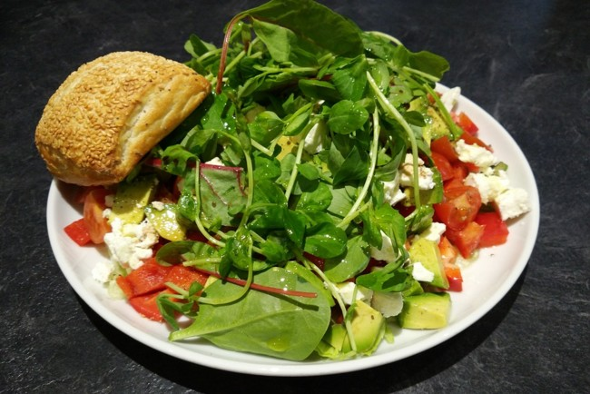

Салат з авокадо, сиру і помідорів
Інгредієнти:
- 1 авокадо
- 2 помідори середнього розміру або жменю помідорів чері
- 2 зубчики часнику
- 100-150 г будь-якого м'якого сиру (моцарели, фетакси, бринзи, адигейського)
- Пучок свіжої зелені
- Сіль, чорний мелений перець
- 2 ст. л. лимонного соку
- Трохи оливкової олії
Рецепт приготування:
- Зелень промити і обсушити, порвати руками.
- Все решту складових, крім часнику, нарізати невеликими кубиками.
- Очищений часник нарізати тонкими пластинками.
- З'єднати всі інгредієнти в мисці. Полити сумішшю оливкової олії і лимонного соку, посолити і поперчити.
Лазанья

Інгредієнти
Для основи:
- 800-900 г Фарш (телячий або асорті)
- 1 склянка Томатний сік (або томатний соус за смаком)
- 3 ст. л. Оливкова олія
- 1 шт. Цибуля ріпчаста
- 3-4 зубчика Часник
- 2 стебла Селера
- 100 мл Вино червоне
- 300 г Твердий сир
- 70 г Сир Пармезан
- 15-16 шт. Листи лазаньї
- 3 гілочки Свіжий базилік (для подачі, за бажанням)
- за смаком Сіль та перець
Для соусу бешамель:
- 0,8-1 л Молоко
- 80-100 г Вершкове масло
- 80-100 г Борошно
- ¼ ч. л. Мелений мускатний горіх
- 1-2 дрібки Сіль
Рецепт приготування:
- Приготуйте соус бешамель. Для цього є два шляхи приготування основи соусу - ру. Перший варіант: розтопити вершкове масло (80-100 г) і додати борошно (80-100 г), просмажити все разом 3 хвилини, як це робить більшість домашніх кухарів по всьому світові. Цей спосіб досить простий у виконанні. Або спробувати свої сили у іншому варіанті. Спочатку підрум'яньте борошно у сухому сотейнику при постійному помішуванні протягом 1 хвилини, доки не з’явиться характерний аромат. Потім додайте вершкове масло і все активно помішуйте до отримання однорідної і кашеподібної маси. Другий спосіб може дати більше смаку вашому соусу, але є ймовірність, що через недосвідченість борошно у вас може пригоріти. Так що обирайте варіант самі.
- Основа соусу ру готова і тепер можна переходити до наступного кроку. Тонкою цівкою влийте все молоко (0,8-1 л), постійно помішуючи, щоб уникнути утворення грудочок.
- Заваріть соус, постійно помішуючи на середньому вогні вінчиком, поки він не загусне до стану рідкої сметани. Додайте кілька дрібок солі за смаком і тертий або мелений мускатний горіх (¼ ч. л.). Соус бешамель готовий. Відставте його до моменту, поки не почнете збирати страву.
- Тепер приготуйте соус болоньєзе - м'ясну складову нашої лазаньї. Цибулю (1 шт.) і часник (3-4 зубчики) наріжте дрібними кубиками. Припустіть на пательні до м'якості з невеликою кількістю оливкової олії.
- Стебла селери (2 шт.) очистіть від грубих волокон і наріжте тонкими слайсами. Додайте до пательні з цибулею і злегка підрум'яньте.
- Потім додайте фарш (800-900 г) і, при постійному помішуванні дерев'яною лопаткою, розбийте його на маленькі шматочки. Він повинен рівномірно приготуватися і потемнішати. Додайте червоне сухе вино (100 мл) і випаріть протягом 5 хвилин. Вино надасть соусу неймовірного благородного аромату і смаку.
- Влийте томатний сік (1 склянку) або використовуйте томатний соус і тушкуйте суміш ще 5-10 хвилин, щоб соус упарився вдвічі. Доведіть до смаку сіллю і перцем.
- Твердий сир (300 г) натріть на крупній тертці та приступайте до збірки лазаньї. Оберіть прямокутну керамічну форму для запікання. Змастіть її невеликою кількістю вершкового масла. Дном форми розподіліть невелику кількість соусу бешамель.
- Викладіть листи лазаньї (всього знадобиться 15-16 листів), щоб вони максимально вкрили дно форми. Нічого страшного, якщо доведеться покласти їх трохи внахлест.
- Третину соусу болоньєзе рівномірно розподіліть по листах лазаньї за допомогою ложки або лопатки.
- Тепер додайте невелику кількість соусу бешамель. Намагайтеся, щоб він рівномірно розподілився периметром форми.
- Посипте третиною тертого твердого сиру, так щоб він теж рівномірно розподілився формою.
- Накрийте листами лазаньї і повторіть процедуру складання 2-3 рази в залежності від висоти форми. У мене вийшло три повноцінних шари із соусом болоньєзе. Останній шар листів лазаньї полийте молочним соусом бешамель і посипте його пармезаном (70 г), натертим на дрібній тертці. Поставте форму в духовку з температурою 180 градусів на 40-50 хвилин до появи апетитної рум'яної скоринки. Я випікав лазанью на спеціальному режимі духовки, який так і називається «лазанья». Якщо такого режиму у вас немає, то можете випікати її на режимі нижнього нагріву протягом 30 хвилин, а потім переключити на режим верхнього та нижнього нагріву, щоб отримати золотаву скориночку. Гарячу лазанью наріжте порційними шматочками і подавайте до столу з листочками базиліку і свіжомеленим чорним перцем.